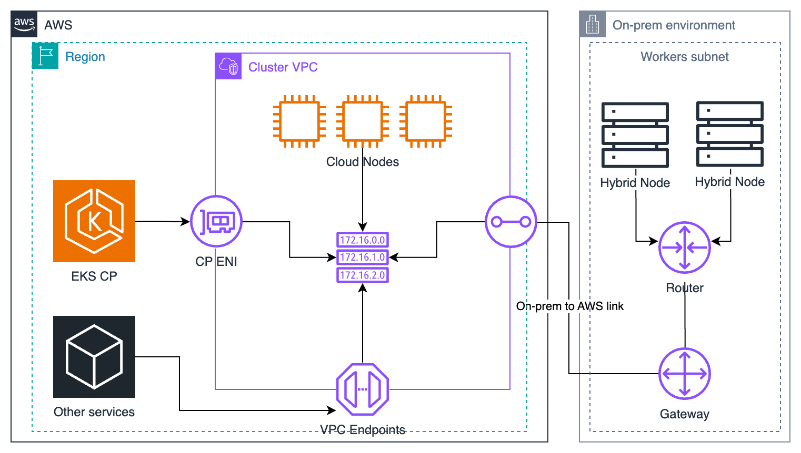
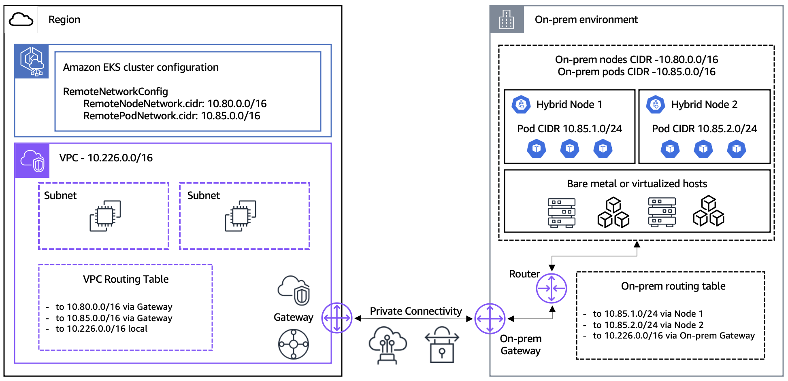
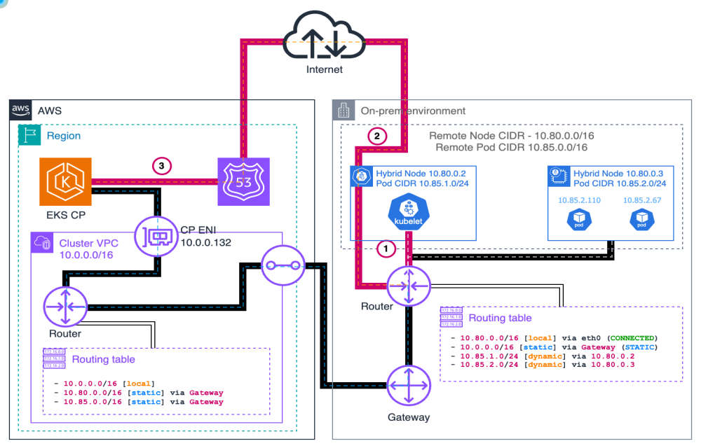
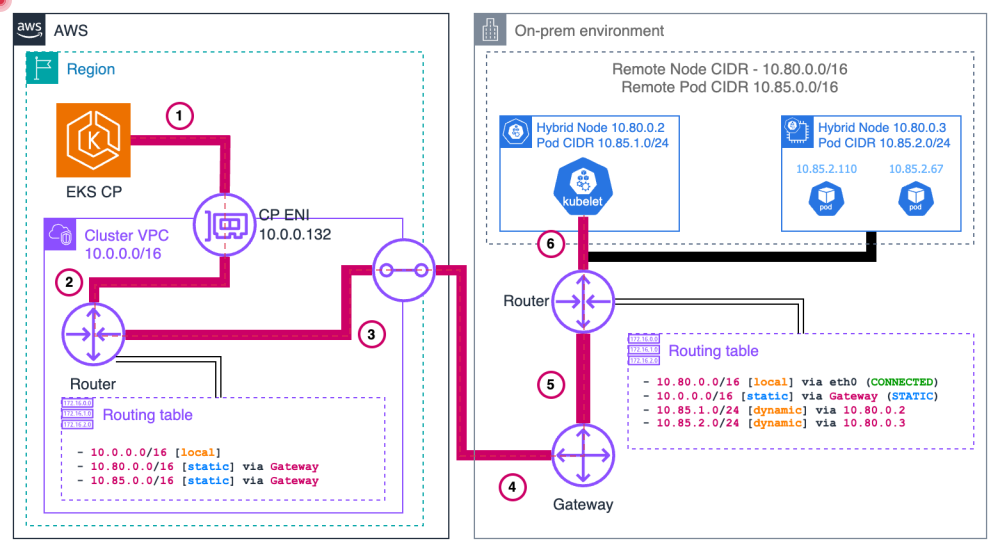
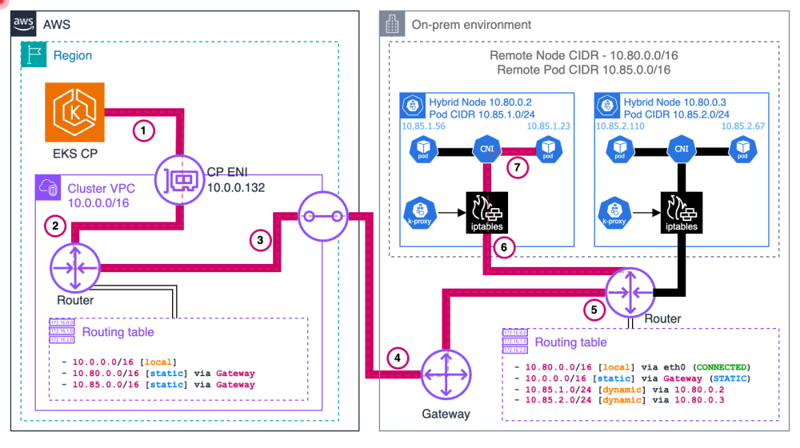
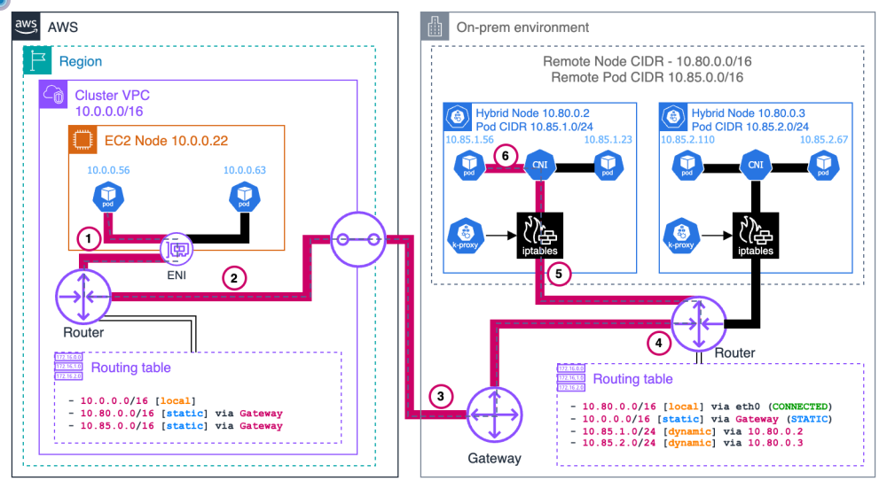

EKS Hybrid Nodes
온프레미스를 EKS로 확장하는 가이드
Block 1: 개요 & 아키텍처 | 30분
오늘 세션 구성
총 120min 세션
온프렘 K8s, 왜 아직도 힘든가
Edge 옵션, 책임 경계가 다르다
| 옵션 | 컨트롤 플레인 | 워커 노드 | 인프라 소유 |
|---|---|---|---|
| EKS (클라우드) | AWS 관리 | AWS Region의 컴퓨팅 | AWS |
| EKS on Local Zones | AWS 관리 (Region) | Local Zone의 AWS 인프라 | AWS |
| EKS on Outposts | 확장 클러스터는 Region, 로컬 클러스터는 Outposts에서 AWS 관리 | 고객 시설에 설치된 AWS 인프라 | AWS 제공 |
| EKS Anywhere | 고객이 직접 운영 | 고객 인프라 | 고객 |
| EKS Hybrid Nodes | AWS 관리 (EKS) | 고객 소유 온프레미스, 엣지 호스트 | 고객 |
컨트롤 플레인만 AWS에 맡긴다

Ready까지 여섯 단계
책임은 나뉘고, 데이터는 AWS에
- EKS API server, etcd, scheduler, controller
- SSM / IAM Roles Anywhere 서비스
- 컨트롤 플레인 가용성 관리
- Host, OS, 보안 패치, kubelet, containerd 운영
- CNI 구성, VPN, Direct Connect, 라우팅
- 노드 인증서, 자격 증명 준비, 워크로드 운영
도입 전 꼭 확인할 6가지 제약
지원 매트릭스: OS, K8s, CNI
| OS | 지원 범위 |
|---|---|
| Ubuntu | 20.04, 22.04, 24.04 |
| RHEL | 8, 9 |
| Amazon Linux 2023 | 온프렘 가상화 환경만 (베어메탈 아님) |
| Bottlerocket | VMware 변형 v1.37.0+, x86_64만, nodeadm 미사용 |
아키텍처는 x86_64와 arm64. RHEL 10과 Ubuntu 26.04는 지원 목록에 없음.
| 항목 | 내용 |
|---|---|
| K8s 버전 | EKS와 동일한 버전 지원 (기준일 2026-10-07: 표준 1.34–1.37, 확장 1.31–1.33) |
| nodeadm | 현재 v1.0.20, SSM 사용 시 1.0.19 이상 필요 |
| 설치 권장 | releases/latest 대신 릴리스를 고정하고 checksum 검증 |
| 리전 | GovCloud (US), 중국 리전을 제외한 모든 AWS 리전 |
| 업그레이드 주의 | 1.35 cgroup v2 필수, 1.36 containerd 2.0+, 1.37 SELinuxMount 기본 활성, kubelet flag 변경 (Block 3 점검 슬라이드) |
| 항목 | 내용 |
|---|---|
| AWS 지원 범위 | AWS 빌드 oci://public.ecr.aws/eks/cilium/cilium |
| 공식 CNI 페이지 | v1.17.x, v1.18.x 명시 (Gateway 사용 시 최소 1.17.13-1, 1.18.8-1, 1.19.2-1) |
| 커널 | Cilium 1.18.3은 kernel 5.10+ 필요 → Ubuntu 20.04, RHEL 8 미지원 |
| 주의 | 업스트림 최신 Cilium이 자동으로 AWS 지원 대상은 아님 |
| 지원 범위 | IPv4, VXLAN, Cluster Scope IPAM 등 |
자격 증명: SSM vs IAM RA
요금은 vCPU-hour 구간제
| 월 누적 vCPU-hours 구간 | vCPU-hour당 요금 |
|---|---|
| 처음 576,000 | $0.020 |
| 다음 576,000 | $0.014 |
| 다음 4,608,000 | $0.010 |
| 다음 5,760,000 | $0.008 |
| 11,520,000 초과 | $0.006 |
내 환경 비용 직접 계산해보기
Join 전 사전 준비 체크리스트
- Access entry: node IAM role에 HYBRID_LINUX 타입 생성
{ "clusterName": "my-hybrid-cluster", "principalArn": "arn:aws:iam::123456789012:role/EKSHybridNodeRole", "type": "HYBRID_LINUX" }
- remoteNetworkConfig: remote node, Pod CIDR 선언 (기존 클러스터에도 추가 가능)
remoteNetworkConfig: remoteNodeNetworks: - cidrs: [10.80.0.0/16] remotePodNetworks: - cidrs: [10.85.0.0/16]
- IAM: eks:DescribeCluster 포함 (AmazonEKSWorkerNodeMinimalPolicy에는 없음)
- CIDR: IPv4, RFC1918/CGNAT, VPC, service CIDR과 중복 없음
- 연결: TGW/VGW 양방향 라우팅, 443 / 10250 / webhook 포트 방화벽
- OS: 지원 OS, nodeadm 버전, containerd source 확인
Block 1 퀴즈 (1/2)
Block 1 퀴즈 (2/2)
References & Q&A
Block 2: 네트워킹 & Hybrid Nodes Gateway
누가 세션을 열고, Pod CIDR은 어떻게 도달하며, Gateway는 언제 쓰는가
연결이 먼저, 쿠버네티스는 그다음

CIDR 설계: 겹치면 모든 게 막힌다
- Remote node CIDR 최대 15개, remote Pod CIDR 최대 15개
- IPv4 전용, RFC1918 또는 CGNAT(
100.64.0.0/10) 범위 - node/Pod CIDR끼리, 그리고 VPC, Service CIDR과도 겹치지 않을 것
- 기존 클러스터에도 remote network 구성을 추가할 수 있음 (생성 시점 전용 아님)
"remoteNetworkConfig": { "remoteNodeNetworks": [{ "cidrs": ["10.80.0.0/16"] }], "remotePodNetworks": [{ "cidrs": ["10.85.0.0/16"] }] }
- Pod CIDR을 라우팅 가능하게 만들지(BGP/static) 결정, webhook, Cloud↔Hybrid Pod 통신이 여기에 달림
- Cilium cluster-pool: 기존 항목, MaskSize 변경 금지, 확장은 새 항목 추가 (Cilium 문서 기준)
443은 안에서 열고, 10250은 밖에서 온다
kubelet과 CP, 세션 방향이 다르다

eks)와 Kubernetes API endpoint는 별개입니다.
Pod→API: Service 변환과 SNAT
웹훅: CP가 Pod IP로 직접 들어온다

hybrid_vxlan0, VNI 2, UDP 8472 → hybrid node IPaffinity:
nodeAffinity:
requiredDuringSchedulingIgnoredDuringExecution:
nodeSelectorTerms:
- matchExpressions:
- key: eks.amazonaws.com/compute-type
operator: NotIn
values:
- hybrid
Pod 간 통신: VXLAN과 Cloud↔Hybrid
10.85.1.x
dst node 2 IP
10.85.2.x

hybrid_vxlan0VNI 2, UDP 8472
→ DX/VPN →
라우팅 선택: static, BGP, Gateway
| 비교 항목 | static route | Cilium BGP v2 | Gateway |
|---|---|---|---|
| Pod CIDR 도달 방법 | 온프렘 라우터에 node별 prefix를 수동 등록 | Cilium이 Pod CIDR을 라우터에 광고 | pod CIDR당 VPC route 1건 → leader ENI + VXLAN |
| 온프렘 라우터 변경 | 필요 (route 유지, drift 추적) | 필요 (peering, ASN, prefix filter) | Pod CIDR route는 불필요 (node IP, UDP 8472은 필요) |
| CNI 제약 | 지원되는 routable Pod 설계 | Cilium BGP Control Plane | AWS Cilium VTEP + l7Proxy=false |
| HA / 처리량 | 네트워크 팀 설계, 라우터/링크 한계 | 네트워크 팀 설계, 라우터/링크 한계 | Lease active-standby, 활성 Gateway 1대 한계 |
| 정리(제거) | 소유한 route 정리 | 소유한 route/peering 정리 | Helm 제거해도 VPC route는 남음 |
l7Proxy=false 제약과 추가 hop을 수용할 수 있다면Cilium BGP v2: Pod CIDR만 광고
hybrid 노드를 선택해 라우터와 peering (localASN = Cilium node, peerASN = 온프렘 라우터)
timer와 graceful restart, 광고 selector 연결
Pod CIDR만 광고 (Service, LB IP는 별도 설계)
Helm values로 BGP Control Plane 활성화 후 상태 확인
Gateway는 Pod CIDR 라우팅 숙제를 던다
l7Proxy=false 필요 (Cilium Ingress/Gateway API/L7 policy와 같은 설치에서 충돌)Gateway 데이터 플레인: 한 경로로 읽기
dst = Hybrid Pod IP
hybrid pod CIDR마다 1건 → leader ENI
(ReplaceRoute)
hybrid_vxlan0, VNI 2UDP 8472, IP 없음
로컬 FDB, ARP, onlink route
DX/VPN
decap
CiliumVTEPConfig hybrid-gateway(tunnelEndpoint, cidr, mac)를 갱신 → Cilium이 VPC CIDR 목적지를 VXLAN으로 leader에 전송Gateway HA: active/standby, scale-up
renew deadline 2s
standby가 획득 (retry 1s)
새 leader ENI
CiliumVTEPConfigIP, MAC 갱신
Gateway 설치: 노드→IAM→VTEP→Helm
Auto Mode NodeClass의 source/dest check 해제 (필드 발췌)
NodePool 쪽은 Gateway 노드에 label을 붙입니다 (chart nodeLabel과 일치)
NodePool은 label hybrid-gateway-node: "true"와 taint hybrid-gateway-node:NoSchedule을 사용합니다(전체 manifest는 AWS getting-started 문서). 관리형/자체 관리 노드는 primary ENI source/dest check를 별도로 끄고 autoMode.enabled=false
SNAT_EXCLUDE_CIDRS는 기존 제외 범위와 모든 hybrid Pod CIDR의 합집합입니다. Auto Mode는 aws-node DaemonSet이 없고, serviceAccount.annotations는 1.0.2에서 무시됩니다.
AWS Cilium 최소 버전: 1.17.13-1, 1.18.8-1, 1.19.2-1. Cilium minor를 바꾸는 업그레이드에서는 --reuse-values를 주의하세요.
Gateway 운영: 관측과 제약
메트릭 (포트 10080 /metrics) | 의미 / 쓰는 법 |
|---|---|
hybrid_gateway_leader_is_active | replica의 leader 여부. sum()이 1이어야 하며 route 성공의 증거는 아님 |
hybrid_gateway_hybrid_nodes_configured | replica별 로컬 구성 노드 수 (leader+standby 합산 금지) |
hybrid_gateway_vxlan_{tx,rx}_{bytes,packets}_total | Counter, rate()로 처리량 확인 |
hybrid_gateway_aws_route_table_update_errors_total | Counter, increase(…[5m])로 최근 실패만 판단 |
/healthz, /readyz. chart는 Service, ServiceMonitor, PDB를 만들지 않으므로 직접 구성하고, readiness만으로 forwarding 성공을 판단하지 마세요.l7Proxy=false는 Ingress/Gateway API/L7 policy와 같은 설치에서 충돌hybrid-gateway, Pod Identity association, 전용 capacity는 IaC 소유자가 정리방화벽 규칙: 모드별로 달라진다
| Flow | 포트 | 시작 주체 |
|---|---|---|
| Node/Pod → Kubernetes API | TCP 443 (실제 endpoint) | 온프렘 |
| CP ENI → kubelet | TCP 10250 | AWS (inbound) |
| CP → webhook/aggregated API Pod | 실제 설정한 TCP port | AWS (inbound) |
| DNS client ↔ 실제 resolver | UDP/TCP 53 | 구성별 |
| hybrid 노드 간 Cilium VXLAN | UDP 8472 (Geneve 선택 시 UDP 6081) | 노드 |
| Cilium health | TCP 4240 (+ICMP) | 노드 |
10.0.0.0/8 등)이나 인증 없는 kubelet 10255는 열지 마세요.| Flow | 포트 | 비고 |
|---|---|---|
| BGP node ↔ router | TCP 179 | 설정한 active/passive peer 기준, BGP 사용 시 |
| CP/Cloud → hybrid Pod | 실제 앱, webhook port | Pod CIDR route + return path 필요 |
| static route | (포트 없음) | node별 prefix → node IP 수동 유지 |
| Flow | 포트 | 비고 |
|---|---|---|
| Gateway 노드 ↔ hybrid 노드 | UDP 8472 양방향 | SG, NACL, 온프렘 방화벽. Gateway 노드 private IP (EIP 아님), leader/standby 후보, 교체 노드 모두 |
| Cloud workload ↔ hybrid Pod | 실제 앱 port | 반환 트래픽 포함 |
| Prometheus → Gateway | TCP 10080 | 승인된 scraper만 |
| health probe | TCP 8088 | /healthz /readyz |
VPC 엔드포인트: 쓰는 만큼만
Block 2 Quiz (1/2)
Block 2 Quiz (2/2)
공식 문서로 이어가기
…/hybrid-nodes-cilium-bgp.html
…/hybrid-nodes-gateway-getting-started.html
…/hybrid-nodes-gateway-operations.html
Block 3: 노드 부트스트랩 & 라이프사이클
사전 준비 → nodeadm → Cilium → 업그레이드 → 트러블슈팅 → 크리덴셜
조인 전에 끝낼 AWS 사전 준비
노드 IAM 역할에 HYBRID_LINUX 타입 access entry를 만듭니다. 일반 SSM 관리 역할만으로는 조인되지 않습니다.
- 매핑은
system:node:{{SessionName}}+ node-bootstrap 그룹 사용 - 기존 mapping을 지우는 한-role
aws-authConfigMap은 적용하지 않기
클러스터 생성 시 원격 노드/Pod CIDR을 선언합니다. 기존 클러스터에도 remote network 구성을 추가할 수 있습니다.
- CIDR은 IPv4, 종류별 최대 15개, RFC1918 또는 CGNAT(100.64.0.0/10)
AmazonEKSWorkerNodeMinimalPolicy만으로는 eks:DescribeCluster 권한이 없습니다. 역할에 직접 추가합니다.
- SSM: ECR pull + SSM core + 등록 해제 권한 (
ssm:DeregisterManagedInstance) - IAM Roles Anywhere: 프로필에
acceptRoleSessionName: true - Pod Identity는
eks-auth:AssumeRoleForPodIdentity를 별도로 부여
nodeadm: 명령은 여섯 개뿐
aws/eks-hybrid (EC2용 amazon-eks-ami의 nodeadm과 다름). SSM 신규 설치, 업그레이드는 1.0.19 이상 필요.upgrade --rollback, reset, init --dry-run은 존재하지 않습니다.부트스트랩은 다섯 걸음
NodeConfig는 공급자 하나로 충분
파일은 root 소유 0600으로 보호하고 활성화 코드를 로그에 남기지 않습니다. 등록 후 Node 이름은 mi-*입니다.
- 필수 입력은 클러스터 이름 + 리전 + 공급자 블록
- API 엔드포인트, CA, CIDR은 직접 쓰지 않습니다. 역할의
eks:DescribeCluster로 nodeadm이 조회합니다 - IAM Roles Anywhere는
nodeName,certificatePath,privateKeyPath가 추가로 필요 nodeName은 인증서 CN과 역할 신뢰 정책 조건에 묶이며 최대 64자- 인증서 하나를 여러 머신에 재사용하지 않습니다
Bottlerocket은 nodeadm이 없다
방식 settings.toml +
eks-hybrid-setup bootstrap container, guestinfo.userdata.encoding=base64api-server, CA는 자동 조회되지 않으므로 직접 기입합니다.containerd 소스는 OS가 정한다
distro (기본)docker 또는 none, distro는 무효docker 사용 불가베어메탈은 이미지로 찍어낸다
hybrid-nodes-template.pkr.hcl, vSphere OVA, QEMU qcow2/rawignoredisk와 clearpart를 같은 디스크로 제한Cilium: 하이브리드 노드에만 설치
- AWS 지원 범위는 AWS 유지 관리 빌드(
oci://public.ecr.aws/eks/cilium/cilium) - 공식 CNI 페이지: 1.17.x / 1.18.x (예: 1.17.9-0, 1.18.3-0)
- Hybrid Nodes Gateway를 쓰면 branch별 VTEP 최소 1.17.13-1, 1.18.8-1, 1.19.2-1: 위 예시 버전으로는 Gateway 불가
- 1.18.3은 커널 요구로 Ubuntu 20.04, RHEL 8 제외
- 업스트림 최신 차트를 임의로 쓰지 않습니다
마스크가 노드당 Pod 수를 정한다
| MaskSize | 전체 IPv4 | 사용 가능 (−2 예약) | maxPods 산정 예 |
|---|---|---|---|
| /26 | 64 | 62 | 50 |
| /25 | 128 | 126 | 110 |
| /24 | 256 | 254 | 240 |
clusterPoolIPv4PodCIDRList와 MaskSize를 변경하지 않는다라벨은 하나, 테인트는 없다
eks.amazonaws.com/compute-type=hybrid 하나뿐. --node-labels로 따로 넣을 필요 없음kubelet.flags의 --node-labels=...kubelet 튜닝: 예약, 축출, maxPods
Node Allocatable에서 차감하는 예약량입니다. OS, kubelet, 런타임, CNI 사용량을 측정해 정합니다. 위 값은 초기 산정 예입니다.
Hard 임계값은 유예 없이 처리됩니다. evictionHard를 바꾸면 inode 항목까지 전체 의도한 임계값을 명시하세요. 누락한 기본 임계값은 0이 됩니다.
maxPods는 Cilium 노드별 pool 크기(/25 → 사용 가능 126)와 함께 정합니다. 종료 유예 60초에는 critical Pod용 20초가 포함됩니다.
업그레이드는 교체가 기본이다
- 권장: 새 호스트를 준비해 전환: 새 노드를 초기화, 검증한 뒤 이전 호스트를 비웁니다 (이전 호스트는 검증 완료까지 보존)
- in-place: 비운(cordon + drain) 호스트에서
nodeadm upgrade실행. 중단 작업이며 트랜잭션식 다운그레이드가 아님 - kubelet은 API 서버보다 새 버전일 수 없고, n-3까지 뒤처질 수 있음 (계속 유지하라는 권장은 아님)
- 뒤처진 노드를 먼저 현재 컨트롤 플레인 마이너로 맞춘 뒤, 다음 마이너는 컨트롤 플레인부터
- 현재 values, Helm revision 저장, 버전별 업그레이드 문서 확인
- Hybrid 노드로 한정한 별도 preflight 릴리스 실행 (
preflight.enabled=true,agent=false,operator.enabled=false) - DaemonSet 커버리지와 검증 Deployment readiness를 둘 다 대기
- 통과 후 preflight 릴리스만 제거
- 기존 values + 적절한
upgradeCompatibility로 업그레이드, 한 마이너씩
마이너 버전 사이에
--reuse-values를 쓰지 않습니다.
nodeadm upgrade --rollback은 없습니다- 실패 시 해당 노드의 cordon 유지, 나머지 작업 중단
- 현재 컨트롤 플레인과 호환되는 승인된 이미지/버전의 호스트로 교체
/var/lib/kubelet,/etc/kubernetes재귀 삭제는 롤백 단계가 아님uninstall은 SSM 등록도 해제하므로 무조건 uninstall/reinstall 반복 금지- Cilium만 명시한 Helm revision으로
helm rollback가능하나 데이터 경로 복구를 보장하지 않음 (CRD 호환성 검토 필요)
1.37 업그레이드 전 필수 점검
- 1.37에서
SELinuxMount가 기본 활성화: SELinux가 켜진 노드(예: RHEL)만 영향 - CSI driver가
seLinuxMount: true이고 Pod에seLinuxOptions가 있으면mount -o context=LABEL로 마운트 - 같은 노드에서 한 volume을 다른 label,
seLinuxChangePolicy, 권한 수준으로 공유하면 뒤에 뜬 Pod가ContainerCreating에 멈춤 - 공유 Pod끼리
seLinuxOptions.level과seLinuxChangePolicy를 맞추고, privileged와 unprivileged가 섞이면Recursive로 지정
- deprecated cAdvisor flag가 남아 있으면 kubelet이 기동하지 않음 (
--housekeeping-interval만 예외) eventRecordQPS: 0은 이제 무제한: 이전 동작(초당 5개)을 유지하려면5로 변경- metric 제거:
container_cpu_load_average_10s,container_cpu_load_d_average_10s,container_tasks_state→ 대시보드, 알람 수정 - kubelet이 시작할 때 전체 설정을 로그에 남김 → 노드 로그 읽기 권한 제한
"EKS 최적화 AMI는 영향 없음"은 Hybrid 노드에 해당하지 않습니다. NodeConfig의
kubelet.flags,kubelet.config와 골든 이미지에 넣은 인자를 점검합니다.
- 1.35: cgroup v1 노드에서 kubelet 기동 거부 (기본값), Ubuntu 20.04, RHEL 8은 기본이 cgroup v1
- 1.35: kubelet
--pod-infra-container-imageflag 제거, NodeConfigkubelet.flags, 골든 이미지에서 삭제 - 1.36: containerd 2.0 이상 필요 (1.35가 containerd 1.x 마지막)
- 1.36:
gitRepovolume 비활성,StrictIPCIDRValidation기본 활성, ServiceexternalIPsdeprecated - 업그레이드는 한 마이너씩, 이전 버전의 변경 사항도 모두 적용되므로 함께 점검
위 항목은 업그레이드 전에 끝낼 일입니다. 노드에서 확인하지 못했다면 새 호스트로 먼저 검증합니다.
제한망 ≠ 단절: AWS 연결은 필수
- 제한망 = 퍼블릭 인터넷은 제한, 하지만 EKS 컨트롤 플레인과 자격 증명용 AWS 서비스 연결은 계속 필요
- 물리적 단절(DDIL)은 Hybrid Nodes의 지원 운영 모델이 아님, IAM Roles Anywhere도 CreateSession 호출이 필요
- 온프레미스에서 S3에는 Interface 엔드포인트 사용 (gateway 엔드포인트는 온프레미스에서 직접 접근 불가)
- 소프트웨어는 승인한 manifest를 자체 미러에서 사용, artifact와 manifest는 검토한 절차로 직접 준비 (nodeadm은 SigV4 서명 없는 HTTP(S)로 다운로드)
--private-mode는 --manifest-override가 필수이며 OS 패키지 설치를 건너뜁니다. containerd, runc, iptables, CA 인증서는 미리 설치해 두세요.
hybrid-assets.eks.amazonaws.com을 Route 53 PHZ에서 S3로 CNAME 해도 투명 미러가 되지 않습니다.
- TLS 인증서, SNI 호스트명 불일치
- HTTP Host 헤더와 S3 버킷, 키 매핑 불일치
- 요청 권한(서명) 미제공
TLS 검사를 끄는 방식으로 해결하지 않습니다. 대신 통제된 프록시, 사전 설치 이미지, 실제 미러 URL의 manifest override 중 선택하세요.
장애는 증상별로 좁혀 간다
- 노드 IP가 EKS remote node CIDR 안에 있는가
- DNS, 라우팅, TCP 443 반환 경로, 의도한 Hybrid 역할,
HYBRID_LINUXaccess entry - 엔드포인트가 "Public and Private"로 설정되지 않았는가 (public IP로 해석되어 join 실패 가능)
eks:DescribeCluster권한 여부
- CNI, agent 로그, 런타임, 디스크, 리소스 조건 확인
- NotReady가 항상 CNI 누락 때문은 아님
- NotReady만으로 등록 해제, 재초기화하지 않기 (
nodeadm reset은 없음)
- API → kubelet TCP 10250이 온프레미스 방화벽으로 들어오는가
- Webhook은 실제 설정한 포트, Pod IP 경로가 열려 있는가
- 이미지 풀/x509 오류: ECR api, dkr, S3, 레지스트리 CA와 호스트명 (TLS 검증 유지,
curl -k금지) - DNS: CoreDNS가 클라우드/온프레미스 양쪽에 있는지 확인
- EKS cluster insights의 hybrid nodes 점검 항목도 함께 확인
- SSM: 활성화 만료(신규 등록 제한)와 에이전트 갱신, 시각 동기화를 구분
- IAM Roles Anywhere: 인증서 만료, 역할 세션 시간, AWS 접근 확인
sudo aws sts get-caller-identity는 kubelet이 쓰는 신원을 증명하지 않음
크리덴셜 만료를 먼저 감시하라
- 활성화 기본 만료 24시간, 최대 30일, RegistrationLimit 1–1000
- 활성화 만료는 신규 등록만 제한, 이미 등록한 노드는 영향 없음
- 세션 자격 증명은 고정 1시간, 에이전트가 갱신
- 새 호스트 등록이나 승인된 복구에만 새 활성화 생성
- 세션 기본 1시간, 범위 15분–12시간, 역할
MaxSessionDuration이하 - 노드 호스트 인증서 만료를 모니터링 (30일은 경고 임계값 예시)
- 인증서 갱신은 기존 PKI/CA 정책으로, 후보 인증서는 활성 파일과 분리 검증 후 교체
- kubelet 재시작만으로 X.509가 갱신되지 않음
동일 CA에서 leaf만 갱신하면 trust anchor 교체는 보통 불필요합니다. CA rollover는 모든 호스트, profile, role에 영향을 줍니다.
카나리 노드에서 새 자격 증명 발급을 검증한 뒤 마칩니다.
Block 3 Quiz (1/3)
Block 3 Quiz (2/3)
Block 3 Quiz (3/3)
eventRecordQPS: 0의 의미는?References & Q&A
docs.aws.amazon.com/eks/latest/userguide/kubernetes-versions-standard.html
Thank You
운영, 워크로드, 보안 & 전략
Block 4: 배치, GPU, 관측성, 망분리 검토, 비용과 도입 판단
배치는 label 하나에서 시작한다
Hybrid 노드에는 eks.amazonaws.com/compute-type=hybrid label이 자동으로 붙습니다. 위치 label(example.com/location)은 노드 소유자가 직접 부여합니다.
Hybrid taint는 선택 사항입니다. 자동으로 붙지 않으며, 추가 전에 CNI, DNS, GPU 인프라 Pod의 toleration부터 확인합니다.
NoSchedule은 새 스케줄링에만 영향을 줍니다. label이나 required affinity를 바꿔도 이미 실행 중인 Pod는 자동으로 이동하지 않습니다.
ScheduleAnyway는 점수 선호이며 maxSkew를 넘을 수 있습니다. zone label은 실제 장애 도메인에만 부여하고, 모든 Hybrid 호스트를 AWS AZ로 표시하지 않습니다.
버스팅은 Pending Pod가 트리거
스케줄 불가 Pod
toleration 보유
requirements 매칭
cloud-burst-pool
스케일-인 순서는 선호일 뿐
GPU마다 할당 관리자는 하나
| 경로 | 할당 방식 |
|---|---|
| 독립 NVIDIA device plugin | nvidia.com/gpu 등 확장 리소스 게시 |
| 독립 DRA driver | ResourceSlice 게시, DeviceClass/ResourceClaim으로 할당 |
GPU Operator + ClusterPolicy | Operator가 관리하는 device-plugin 방식 |
GPU Operator 26.7 + GPUCluster | 신규 설치용 Operator 관리 DRA, ClusterPolicy와 상호 배타적 |
MIG는 격리, time-slicing은 공유
MIG는 GPU를 하드웨어 기반 compute, memory 인스턴스로 나눕니다. 아래는 A100 40 GB profile입니다.
| Profile | 명목 메모리 | 최대 인스턴스 |
|---|---|---|
1g.5gb | 5 GB | 7 |
2g.10gb | 10 GB | 3 |
3g.20gb | 20 GB | 2 |
4g.20gb | 20 GB | 1 |
7g.40gb | 40 GB | 1 |
4g.40gb는 A100 80 GB의 profile입니다. MIG 활성화, 재구성은 GPU 워크로드를 중단할 수 있는 유지보수 작업이며, Pod 요청만 nvidia.com/mig-1g.5gb로 바꿔도 인스턴스가 생기지 않습니다.
renameByDefault: true이면 nvidia.com/gpu.shared로 게시됩니다. replica 4개는 독립 메모리 영역 4개가 아니며, replica 사이에 메모리, 장애 격리가 없습니다.
| NVIDIA 사양 | H100 SXM | H200 SXM |
|---|---|---|
| GPU 메모리 | 80 GB HBM3 | 141 GB HBM3e |
| 메모리 대역폭 | 3.35 TB/s | 4.8 TB/s |
| MIG | 최대 7개 | 최대 7개 |
공급자 사양이며 이 환경의 실측값이 아닙니다. NVL/PCIe variant는 값이 다르므로 SXM 행을 모든 H100에 일반화하지 않습니다.
hybrid 지표는 relabel로 구분
node_cpu_seconds_total 등 호스트 지표는 kubelet이 아니라 Node Exporter가 제공합니다. DCGM exporter는 별도로 설치되어 있어야 합니다.
Hybrid에서는 cluster, workload, Pod, container 지표를 지원합니다. node-level 지표는 EC2 IMDS에 의존하는데 Hybrid 호스트에는 없어서 제공되지 않습니다. 호스트 CPU, 메모리는 Node Exporter와 Prometheus로 보완합니다.
Pod Identity 환경에서도 Hybrid 호환을 위해 RUN_WITH_IRSA 변수가 필요합니다. 기존 AmazonCloudWatchAgent의 spec.env 목록에 추가하고 기존 항목은 보존합니다.
CoreDNS는 양쪽에 최소 1개
| 애드온 | 이 설계의 배치 |
|---|---|
| AWS Load Balancer Controller | cloud node (webhook 접근, routable Hybrid IP target) |
| CloudWatch agent/operator | agent는 지원 노드, operator webhook은 cloud 권장 |
| cert-manager | webhook cloud 권장, routable이면 Hybrid 가능 |
| Metrics Server | cloud 또는 도달 가능한 Hybrid Pod endpoint |
| Cilium/Calico | Hybrid Node (cloud node는 VPC CNI 유지) |
호환 기준이며 설치 target 버전이 아닙니다.
| Add-on | Hybrid 호환 기준 |
|---|---|
| Node monitoring agent | 1.2.0-eksbuild.1 |
| External DNS | 0.19.0-eksbuild.1 |
| FSx CSI | 1.7.0-eksbuild.1 |
| Secrets Store provider | 2.1.1-eksbuild.1 |
| Pod Identity Agent | 1.3.3-eksbuild.1 (Bottlerocket 1.3.7-eksbuild.2) |
적격 노드에 location 값 cloud 또는 onprem을 부여합니다. 한 도메인에 용량이 없으면 새 replica가 Pending일 수 있어 가용성 절충이며 failover 보장이 아닙니다.
외부 노출은 IP target과 BGP로
자체 관리형 AWS Load Balancer Controller는 도달 가능한 Hybrid Pod IP를 target으로 등록할 수 있습니다. ALB는 alb.ingress.kubernetes.io/target-type: ip, NLB는 service.beta.kubernetes.io/aws-load-balancer-nlb-target-type: ip와 loadBalancerClass: service.k8s.aws/nlb를 사용합니다.
route, 반환 경로, security group/firewall, remote Pod network 구성이 맞아야 합니다. 컨트롤러는 cloud node에 두는 설계를 권장합니다.
예시 CIDR은 인벤토리에서 예약한 비중복 대역으로 바꿉니다. IP 할당이 라우터 광고나 통신 성공을 보장하지는 않습니다.
CiliumBGPClusterConfig, CiliumBGPPeerConfig와 함께 구성합니다. 세션, 수락된 라우트, next hop, 반환 경로를 확인해야 완성입니다.
cilium.io/v2 BGP CRD는 Cilium 1.18 기준입니다. 1.17.x 클러스터는 Block 2 예제처럼 v2alpha1을 사용합니다.
Cilium Ingress와 Gateway API는 L7 proxy가 필요합니다. 그러나 Hybrid Nodes Gateway의 필수 설정은 vtep.enabled=true, l7Proxy=false이므로 같은 Cilium 설치에 함께 적용할 수 없습니다. 기능을 켜기 전에 네트워크 설계를 먼저 선택합니다.
Pod Identity는 6단계 체크
- (Ubuntu, RHEL, AL2023) 호스트 NodeConfig에 credentials file 활성화
spec: hybrid: enableCredentialsFile: true
- 호스트마다 계획된
nodeadm init을 다시 실행 (한 호스트씩 검증) - Pod Identity Agent add-on에 Hybrid DaemonSet 활성화
{"daemonsets": {"hybrid": {"create": true}}}
- add-on 버전 확인: 일반 OS 1.3.3-eksbuild.1 이상. Bottlerocket은 add-on 1.3.7-eksbuild.2 + OS 1.39.0 이상이며, 1–3 대신 bootstrap 명령에
--enable-credentials-file=true, DaemonSet 키는hybrid-bottlerocket -
eks-auth서비스 경로 + 노드 역할의eks-auth:AssumeRoleForPodIdentity권한 - 워크로드별 Pod Identity association (namespace, ServiceAccount, IAM role 신뢰, 권한)
'endpoint'는 세 가지를 뜻한다
망분리는 요건별로 따진다
| 고객 요구 | 이 설계의 판단 |
|---|---|
| 인터넷 비노출, 승인된 사설 관리 통신 허용 | 검토 가능한 후보 (증명 필요) |
| 물리 단절, 외부 CP와 실시간 연결 불가 | 연결 전제와 충돌 |
| 클라우드발 신규 연결 전면 금지 | kubelet, webhook 흐름과 충돌 |
| 업무 영역별 관리 주체, 권한 독립 | 공통 cluster 관리자 범위 심사, 필요 시 cluster 분리 |
| K8s 객체, Secret, 로그까지 온프레미스에만 | AWS control plane 구성과 충돌 가능 |
Direct Connect는 기본적으로 전송 중 암호화를 제공하지 않습니다. Kubernetes API, kubelet의 TLS와 인증을 유지하고, 회선 구간 암호화가 필요하면 IPsec over DX 또는 MACsec 적용 범위를 검토합니다.
MACsec은 지원 DX 연결의 링크 보호이며 종단 간 TLS와 범위가 다릅니다. Hybrid Nodes Gateway(VXLAN)도 자체 암호화가 없습니다.
get nodes/proxy를 단순 조회 권한으로 분류하지 않습니다. kubelet API를 통한 컨테이너 명령 실행이 가능할 수 있고, Kubernetes audit, admission 경로를 우회할 수 있습니다.
pods/log, pods/exec, pods/attach, pods/portforward, nodes/proxy와 workload 생성 권한을 함께 검토합니다.
다음은 준비할 증거 목록이며 점검 결과가 아닙니다.
| 심사 질문 | 증거 |
|---|---|
| private-only가 실제 적용됐는가 | endpoint 설정, DNS 응답, DX 경로, 경계 flow 기록 |
| AWS에서 어디까지 접근 가능한가 | ENI/subnet, remote CIDR, route, SG, firewall 대응표 |
| 누가 어떤 API 작업을 했는가 | EKS audit 로그, CloudTrail |
| 무엇이 망을 통과했는가 | VPC Flow Logs, 방화벽 기록 |
규제 대응은 증거로 말한다
비용은 vCPU-hour 구간 과금
| 월 사용량 구간 (vCPU-hour) | 요금 |
|---|---|
| 처음 576,000 | $0.020 |
| 다음 576,000 | $0.014 |
| 다음 4,608,000 | $0.010 |
| 다음 5,760,000 | $0.008 |
| 11,520,000 초과 | $0.006 |
| 노드 | 월 vCPU-h | 연환산 노드 요금 | + 클러스터 1개 |
|---|---|---|---|
| 10 | 233,600 | $56,064 | $56,940 |
| 50 | 1,168,000 | $236,928 | $237,804 |
| 100 | 2,336,000 | $377,088 | $377,964 |
가정: 노드당 32 vCPU, 월 730시간, 같은 월을 12번 반복, 표준 지원 클러스터 1개($0.10/시간) 포함. 청구서나 실측이 아닌 계산 모델입니다.
도입 판단은 제약 확인부터
핵심 요약: 4개 블록, 6가지
Knowledge Check (1/2)
Knowledge Check (2/2)
참고 자료 & Q&A
hybrid-nodes-overview.html
hybrid-nodes-networking.html
hybrid-nodes-add-ons.html
hybrid-nodes-webhooks.html
hybrid-nodes-gateway-cni.html
device-management-nvidia.html
NVIDIA GPU Operator 문서 (platform-support)
karpenter.sh/docs/upgrading/compatibility/
kubernetes.io ReplicaSet pod-deletion-cost